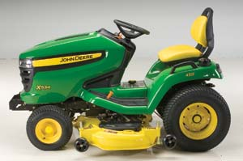

For the last several years, I’ve mowed the two acres around my home, orchard and barn and kept trails open in my five-acre meadow using a sturdy Snapper walk-behind mower with a 20-inch deck. I appreciated the exercise I was getting, but keeping the weeds down on that much ground with such a small mower is a challenge, especially during rainy spells. Every once in a while the grass would get ahead of me, and then it would take twice as long for the Snapper to chew its way through. But a bigger riding mower costing a few thousand dollars just didn’t fit into my budget.
Then last summer I had a chance to try out a Cub Cadet zero-turn riding mower while we were doing the research for this article. Wow, these mowers are nimble, fun andfast! And they let me cut quickly and neatly around the many trees on my property.
Now that I’ve discovered just how much time and effort a zero-turn mower can save, I’m thinking I will contact some of my neighbors and see if they would like to share a “neighborhood mower.” If we split the cost, we’ll all win. If you think this plan might work for you and your neighbors, I suggest you explain the idea to a local mower dealer and ask if they would bring one out for a demonstration day so you can invite the neighbors (including any teenagers) over for a test drive.
I have had lawns of one to three acres, and the biggest problem has been getting the grass cut. The Sears and Cub Cadet mowers I’ve owned seemed to be designed to need parts or service as soon as their warranties expired. The last Sears model I purchased lasted six months before the transmission went out, so I got a refund and decided to try another brand. I bought an Exmark, a high-dollar commercial zero-turn mower with a 44-inch deck. I have found it to be well worth the cost. It mows my three acres in less than half the time it took a conventional riding mower, and uses about a quarter of the gas.
As for repairs, I’ve had the Exmark for four years and have had to do nothing but general maintenance. And my wife loves it! The only downside is the up-front cost ($5,500). The Sears model was only $1,880, but the additional time, gas, parts and service (not to mention the shorter life span) easily offset that difference. The Exmark quickly broke even with the Sears mower and is now pulling ahead. It doesn’t bog down in high grass, and it doesn’t leave streaks. My lawn looks great!
Last year I bought a belt-driven Yard Machines mower, and the belt comes off frequently. You have to get underneath the tractor to get to it, and with our chiggers and ticks, it’s a bad deal when it comes off while you’re mowing.
You have to let the belt warm up before you get started, because it’s more likely to come off when it’s cold. It tends to slip when shifting, so I avoid using the reverse gear. I also avoid grades, because if the belt came off, it would take a second to get to the brake and I fear it would flip over on top of me.
I have not used it as much as I anticipated and gave up on the idea of taking the blades off to sharpen, as they were too hard to access and fastened too tightly. I have a full-size farm tractor, a 5-foot rotary mower and a push mower, so I can avoid using this one where it would be dangerous.
My 1967 Cub Cadet 104 was a good mower, but it turned out to be inadequate for our new farm’s two-plus acres in barn lots and yard. I could expect to spend eight hours per week mowing. Because of the Cadet’s advanced years, I decided to buy a second machine with more horses and a bigger deck.
A salesperson talked me into spending the extra dollars on an 18.5 horsepower Huskee “garden tractor” instead of a similar model that was designated a “lawn tractor.” I was never sorry. The larger wheels, heavier transmission and bigger frame made the machine more stable on slopes, and I was continually amazed at what it would do. One season it had trouble starting. It took three months to get it up and running reliably again, and during that time I bought a John Deere GT235 garden tractor.
I was impressed with the Huskee, but the John Deere blew me away. Not only is it a great mower, but I’ve used it to pull out pickup trucks that got stuck on the farm and pulled loaded hayracks to the barn to unload, and it has never given me a single problem.
The bottom line is, if the machine is to be used on a farm, don’t waste money buying a lawn tractor. Spend the extra money on something that is built heavier and will give you years of service. If I worked a lawn tractor as hard as my garden tractors, I’d be buying one every other year. As it is, my Huskee is 10 years old and still going strong, and the John Deere is now four years old.
My wife and I recently purchased a six-acre farm, and the property is rather rough. I purchased a Sears garden tractor model DGT 6000 with a 26 horsepower Kohler gas engine and automatic transmission. It mows great, the price was good, it pulls a lot of weight in my utility cart, and it’s actually economical in its use of gas.
A few neighbors saw me working out in the yard and stopped to say they had similar models from Sears in the past, and all were pleased with them. I look forward to many more years with this tractor. Currently it takes me approximately 16 hours to mow, and the little beast just keeps humming on.
I have a new John Deere model 125 riding mower and I love it.
I did my research and checked out various riding mowers before buying one. I wanted a mower with a 42-inch deck, double bagger, twin engine, hydrostatic transmission and an oil pump and oil filter for longevity. When I figured these factors into the total cost, the John Deere was the least expensive of all the mowers I considered. And, according to Consumer Reports, the John Deere is No. 1 in reliability.
The design of a mower can make maintenance easy or a chore, and the John Deere has a design that makes tune-ups a breeze.
What I didn’t anticipate is how much fun mowing is with my new John Deere. I actually look forward to it!
I regularly mow at least three of my 30 acres in Iowa and I have learned an expensive lesson: You don’t save money by spending less on a mower.
I started with an $1,800 Craftsman. It lasted several years and then completely fell apart. I then purchased a 19 horsepower, $1,100 mower from the local farm supply store, and in less than a year I had to buy a $300 wire-feed welder to keep the deck intact. The second year, right after the warranty expired, the engine died. The third year brought even more problems. In the end, my monetary investment in this mower came to well over $3,000 before I decided to buy a more dependable machine.
After doing thorough research, including what dealer I would like to work with if I ever needed repairs, I bought a Simplicity Conquest for about $4,500. This is an extremely well-engineered and well-built riding mower. It is only 16 horsepower, but it can handle jobs that used to burn up belts on my 19 horsepower “disposable mower.” The deck can be taken off in two minutes, and the blades stay sharp for hours of rough mowing. The Simplicity gives a superb finish cut, the belt has never slipped, and I have pulled 1,000-pound carts of firewood and gravel over rough ground. Internet reviews say the Simplicity will last for over 20 years of rough duty. I don’t know if mine will last that long, but it runs like new after three years, and all I do is regular maintenance.
You also can spend too much on a mower: I once needed to mow my eight-acre hay field and hired a farmer neighbor to do it instead. He showed up with his huge tractor, barely got his mower deck through my gate and went to work. He apologized that the bill came to $50!
|
 IMRE COMMUNICATIONS This John Deere X534 garden tractor is the updated version of the GT235, which pulled reader Dean Adams’ Truck out of the mud and hauled hayracks to the barn. |
|
|